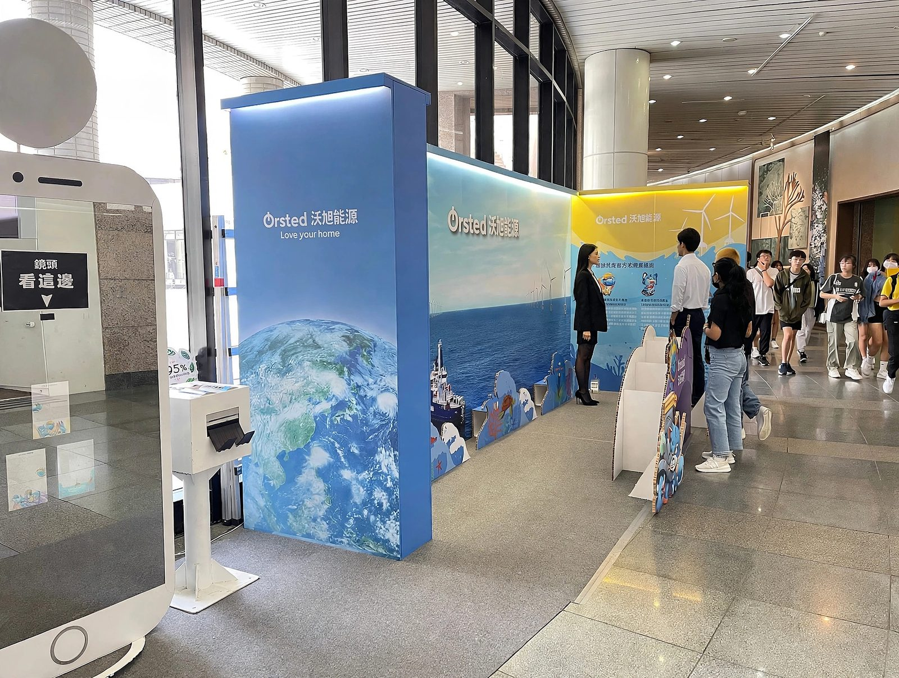
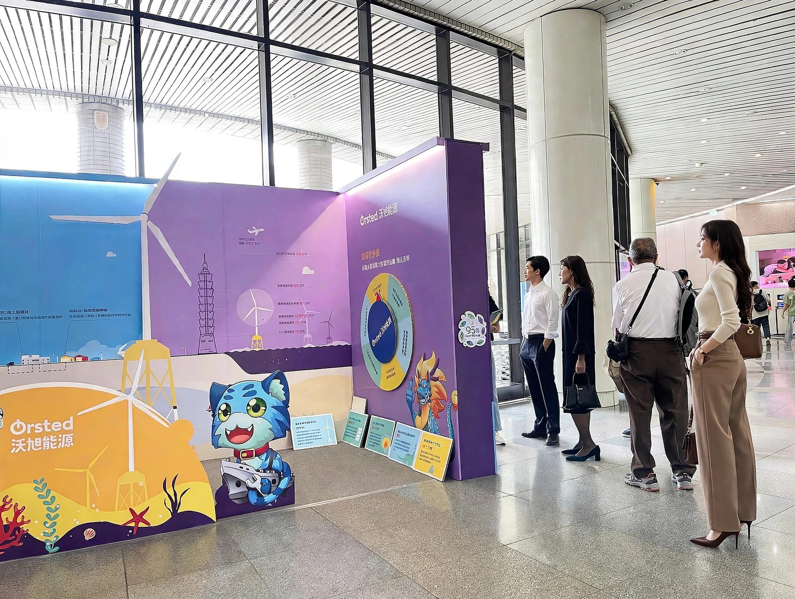

Wind in Motion Ørsted's Sustainable Wind Wave at the 2024 Taiwan Climate Action Expo
Background
The 2024 Taiwan Climate Action Expo ran under the theme "Bold Net Zero, Better Together." It was Ørsted's first year participating, and the goal was to translate the knowledge behind the 1.82GW Greater Changhua offshore wind farm into an experience families could actually engage with, turning an abstract topic into something a child could touch and understand.
For us, this wasn't just a fabrication job. It raised a real question: if an exhibition is about sustainability, can the exhibition itself demonstrate it?
Design thinking: letting the structure tell the story
We approached the pavilion from two angles. The first was brand consistency. Ørsted's story is about energy transition and ocean conservation, so building the ocean out of plywood and PVC laminate would have undercut the message before a single visitor arrived. Corrugated cardboard has a warmth and texture that synthetic materials don't, and it sits much closer to what we were trying to say about the sea and about sustainability.
The second was guiding movement through an open space. The museum lobby has no walls to anchor a pavilion to, and foot traffic simply passes through it. So we designed an L-shaped enclosure, low on the outside and tall on the inside: cardboard cutouts of nine mythical creatures and a low yellow interactive wall pull people in from a distance, while a 2.5-meter indigo feature wall on the inside carries the actual content, including a height comparison between offshore turbines and Taipei 101, and a cross-section of the ocean from surface to seabed. That shift in height turns the space into something like a half-open classroom. People walk in, rather than just walking by.
The build problem: making cardboard stand up on its own
This was the hardest part of the project, and also where we added the most value.
Cardboard is light and recyclable, but that also means it's structurally weak, moisture-sensitive, and poor at resisting lateral force. The venue made things harder still: terrazzo flooring that couldn't be drilled into, no heavy bracing allowed, panels that would be touched and leaned on by families all day, and light boxes that needed to sit inside the structure itself.
The usual fix is to frame the cardboard with wood, but that defeats the point of using cardboard in the first place. So we took the structural engineering used in packaging design and scaled it up a hundredfold for exhibition use.
Instead of adding external supports, we built the rigidity into the panels themselves: a double-layer corrugated and honeycomb-board composite for the main walls, triangular folding feet with counterweighted cavities at the base, and multi-layer mortise-and-tenon joints at every corner. The panels hold themselves up through their own folds and geometry, with no nails, no glue, and no metal fasteners.
Museum installation windows are short, and dust and noise are both restricted. Because the joints were designed to click together like a large-scale model kit, the main structure went up in under four hours and came down again in two, with minimal disruption to the museum's normal operations.
Material and fabrication: from a sheet of cardboard to a finished pavilion
Sustainability isn't just a materials swap. It changes the whole production process.
The main structure uses high-strength corrugated cardboard and honeycomb board, printed entirely with soy-based ink. Soy ink has no volatile organic solvents, holds color well, and de-inks more easily during recycling without contaminating the pulp. Petroleum-based ink can't do that.
The cutting method mattered just as much. We used CNC vibrating-blade cutting throughout, not laser cutting. Laser cutting scorches the edge of the cardboard, leaves a burnt smell, and the charred material can no longer be recycled. CNC blade cutting leaves a clean, odorless edge with tolerances under 0.5mm, which is what let every joint and fold line line up precisely enough for the whole structure to stand.
Results: what 95% recyclable actually looked like
The results showed up in three places.
Environmentally, 95% of the pavilion was recyclable. Apart from the non-woven carpet supplied by the expo organizers, every panel, standee, interactive wheel, and flip-card display was made of cardboard, and the lighting fixtures were reused from existing studio stock. After the expo, all the cardboard was collected and remade into fruit-shipping boxes, leaving zero wood waste on site, a genuine cradle-to-cradle outcome.
Experientially, the pavilion drew the largest crowds of any family zone across the three-day expo, combining a pedal-powered generator, a wind-energy trivia wheel, and a flip-card game to turn dense offshore wind data into something playable.
For the brand, the pavilion itself became the clearest evidence of Ørsted's ESG story, and it was covered by Ørsted's own newsroom as well as CTEE (Commercial Times) and China Times. For the client, this wasn't just an exhibition. It was a piece of sustainable action that could be photographed, reported on, and remembered.
Sustainability doesn't have to be only the message an exhibition carries. It can be how the exhibition itself gets made. That's what we hope this project shows the next client we work with.
Have a project in mind?
Get in Touch

